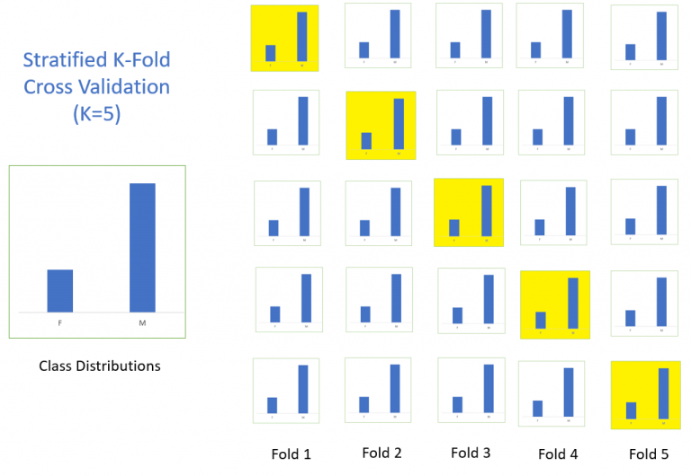

Advanced Techniques
Contents
import pandas as pd
import numpy as np
from sklearn.decomposition import PCA
from sklearn.feature_selection import SelectKBest, f_classif
from sklearn.metrics import accuracy_score
from sklearn.model_selection import (
cross_val_score,
GridSearchCV,
StratifiedKFold,
train_test_split,
)
from sklearn.neighbors import KNeighborsClassifier
from sklearn.pipeline import Pipeline
import pprint as pp
import seaborn as sns
import matplotlib as plt
import sys
sys.path.append('..')
from src.data import load_excel, TRUE_VALUES, FALSE_VALUES
pd.set_option('display.precision',4)
plt.style.use('fivethirtyeight')
pd.set_option('display.max_rows', 200)
pd.set_option('display.max_columns', 50)
pd.set_option('display.width', 1000)
from IPython.core.interactiveshell import InteractiveShell
InteractiveShell.ast_node_interactivity = "all"
Advanced Techniques#
Python’s power derives from it’s collection of libraries and utilities which give complete control over the entire process of data mining. In this notebook we’ll explore a few.
-
reducing the number of features we consider in a dataset
-
patsy is used to create data mining matricies (especially linear models) which is especially helpful when there are variable interactions
-
a technique which trains the model on cross-sections of the training data to help cut down on overfitting
-
sklearn provides a pipeline feature which allows for putting multiple steps for which the output feeds to the input of the next step
Hyper-parameter tuning finding the best model with a number of different combinations of learning parameters
-
a method for combining models to get a better fitting approach
Feature Reduction#
Principal Components#
PCA is used to decompose a multivariate dataset in a set of successive orthogonal components that explain a maximum amount of the variance. In scikit-learn, PCA is implemented as a transformer object that learns components in its fit method, and can be used on new data to project it on these components.
Below is an example of the iris dataset, which is comprised of 4 features, projected on the 2 dimensions that explain most variance:
What this means is that we can find a way to represent most of the variability described by some subset of the factors combined in a way as to keep the relative impact of each of the original factors but reduce the overall number of factors. (Notice the chart doesn’t have units because the eigenvectors that are used to establish the principal components aren’t expressed in units, they are a combination of a group of factors.)
Steps to computing PCA#
At the highest level the following are the steps involved in PCA:
Standardization of the dataset is a must before applying PCA because PCA is quite sensitive to the dataset that has a high variance in its values.
Compute the covariance matrix
Calculate Eigenvalues and Eigenvectors using the covariance matrix of the previous step to identify principal components.
Sort the Eigenvalues and its Eigenvectors in descending order. Here the eigenvector with the highest value has the highest significance and forms the first principal component, and so on. So if we choose to take components n = 2, the top two eigenvectors will be selected.
Transform the original matrix of data by multiplying it top n eigenvectors selected above.
Fortunately the sklearn library manages all this for us, asking us only for the number of Principal Components we want (usually 2-3 is plenty).
# Code source: Gaël Varoquaux
# Modified for documentation by Jaques Grobler
# Borrowed from the scikit learn documentation
# License: BSD 3 clause
import matplotlib.pyplot as plt
from mpl_toolkits.mplot3d import Axes3D
from sklearn import datasets
from sklearn.decomposition import PCA
# import some data to play with
iris = datasets.load_iris()
X = iris.data[:, :2] # we only take the first two features.
y = iris.target
x_min, x_max = X[:, 0].min() - 0.5, X[:, 0].max() + 0.5
y_min, y_max = X[:, 1].min() - 0.5, X[:, 1].max() + 0.5
plt.figure(2, figsize=(8, 6))
plt.clf()
# Plot the training points
plt.scatter(X[:, 0], X[:, 1], c=y, cmap=plt.cm.Set1, edgecolor="k")
plt.xlabel("Sepal length")
plt.ylabel("Sepal width")
plt.xlim(x_min, x_max)
plt.ylim(y_min, y_max)
plt.xticks(())
plt.yticks(())
# To getter a better understanding of interaction of the dimensions
# plot the first three PCA dimensions
fig = plt.figure(1, figsize=(8, 6))
ax = Axes3D(fig, elev=-150, azim=110)
X_reduced = PCA(n_components=3).fit_transform(iris.data)
ax.scatter(
X_reduced[:, 0],
X_reduced[:, 1],
X_reduced[:, 2],
c=y,
cmap=plt.cm.Set1,
edgecolor="k",
s=40,
)
ax.set_title("First three PCA directions")
ax.set_xlabel("1st eigenvector")
ax.w_xaxis.set_ticklabels([])
ax.set_ylabel("2nd eigenvector")
ax.w_yaxis.set_ticklabels([])
ax.set_zlabel("3rd eigenvector")
ax.w_zaxis.set_ticklabels([])
plt.show();
Using the patsy library#
Developing interaction factors is a pretty common feature of many data science platforms and this can of course be done with Python as well. The issue is that this requires a lot of for loops or recursive functions to develop all the interactions with the various variables.
(from the patsy documentation)
patsyis a Python package for describing statistical models (especially linear models, or models that have a linear component) and building design matrices. It is closely inspired by and compatible with the formula mini-language used in R and S.For instance, if we have some variable y, and we want to regress it against some other variables x, a, b, and the interaction of a and b, then we simply write:
patsy.dmatrices("y ~ x + a + b + a:b", data)and Patsy takes care of building appropriate matrices. Furthermore, it:
Allows data transformations to be specified using arbitrary Python code: instead of
x, we could have writtenlog(x),(x > 0), or evenlog(x) if x > 1e-5 else log(1e-5),Provides a range of convenient options for coding categorical variables, including automatic detection and removal > of redundancies,
Knows how to apply ‘the same’ transformation used on original data to new data, even for tricky transformations like > centering or standardization (critical if you want to use your model to make predictions),
Has an incremental mode to handle data sets which are too large to fit into memory at one time,
Provides a language for symbolic, human-readable specification of linear constraint matrices,
Has a thorough test suite (>97% statement coverage) and solid underlying theory, allowing it to correctly handle > corner cases that even R gets wrong, and
Features a simple API for integration into statistical packages.
What Patsy won’t do is, well, statistics — it just lets you describe models in general terms. It doesn’t know or care whether you ultimately want to do linear regression, time-series analysis, or fit a forest of decision trees, and it certainly won’t do any of those things for you — it just gives a high-level language for describing which factors you want your underlying model to take into account. It’s not suitable for implementing arbitrary non-linear models from scratch; for that, you’ll be better off with something like Theano, SymPy, or just plain Python. But if you’re using a statistical package that requires you to provide a raw model matrix, then you can use Patsy to painlessly construct that model matrix;
Cleveland Clinic Heart Disease#
A very commonly used dataset for explanation purposes, the Cleveland Clinic Heart Disease dataset (source) provides data about the likelihood of a patient to have heart disease.
Attribute Information:
age: age in years
sex: sex (1 = male; 0 = female)
cp: chest pain type
Value 1: typical angina
Value 2: atypical angina
Value 3: non-anginal pain
Value 4: asymptomatic
trestbps: resting blood pressure (in mm Hg on admission to the hospital)
chol: serum cholestoral in mg/dl
fbs: fasting blood sugar > 120 mg/dl (1 = true; 0 = false)
restecg: resting electrocardiographic results
Value 0: normal
Value 1: having ST-T wave abnormality (T wave inversions and/or ST elevation or depression of > 0.05 mV)
Value 2: showing probable or definite left ventricular hypertrophy by Estes’ criteria
thalach: maximum heart rate achieved
exang: exercise induced angina (1 = yes; 0 = no)
oldpeak: ST depression induced by exercise relative to rest
slope: the slope of the peak exercise ST segment
Value 1: upsloping
Value 2: flat
Value 3: downsloping
ca: number of major vessels (0-3) colored by flourosopy (for calcification of vessels)
thal: results of nuclear stress test (3 = normal; 6 = fixed defect; 7 = reversable defect)
num: target variable representing diagnosis of heart disease (angiographic disease status) in any major vessel
Value 0: < 50% diameter narrowing
Value 1: > 50% diameter narrowing
import patsy
from patsy.highlevel import dmatrices
# Import and clean-up the heart disease dataset
heart_df = load_excel('HeartDisease_Cleveland',
dtype={'FBS': bool, 'EXANG': bool}, true_values=TRUE_VALUES,
false_values=FALSE_VALUES, na_values=['?'])
heart_df.dropna(inplace=True)
# If the 'DIAG' value is > 0 then we will diagnose as HeartDisease
heart_df['DIAG'] = (heart_df.NUM > 0)
heart_df.drop(columns=['NUM'], inplace=True)
# Set the MAX_NEIGHBORS
MAX_NEIGHBORS = 25
heart_df
heart_df.columns
Of these columns, there are a few that are categorical even though they show up as numeric values. We want to ensure to encode these columns. We can use a ColumnTransformer, or we can use the patsy library which gives us a different approach maybe more readable? You decide.
# This function will build the matrices (that is the predictors with interactions)
def setup_matricies(df):
# We'll look for DIAG as the target and
# Define SEX, CP, FBS, RESTECG, EXANG, SLOPE and THAL as categorical variables
# The other predictors are already seen as numeric, but we can apply scaling (standardization), normalization, or any other transform
s = patsy.scale
y, X = dmatrices(f'DIAG ~ center(AGE) + SEX + C(CP) + C(FBS) + scale(TRESTBPS) + s(CHOL) + '
f'C(RESTECG) + center(THALACH) + C(EXANG) + OLDPEAK + C(SLOPE) +'
f'CA + C(THAL) - 1', df, return_type='dataframe')
# The y (target) matrix uses dummy encoding for both True and False values,
# since we only need to know if TRUE or not we can drop it
y.drop(columns=['DIAG[False]'],inplace=True)
y.rename(columns={'DIAG[True':'DIAG'}, inplace=True)
# For convenience we'll rename all the other columns so that we can read them
X.rename(columns={'C(CP)[1]':'CP_Typical','C(CP)[2]':'CP_ATypical_Angina', 'C(CP)[3]':'CP_NonAngina', 'C(CP)[4]':'CP_Asymptomatic',
'C(FBS)[T.True]':'FBS_True',
'C(RESTECG)[T.1]':'RESTECG_1','C(RESTECG)[T.2]':'RESTECG_2',
'C(EXANG)[T.True]':'EXANG_True',
'C(SLOPE)[T.2]':'SLOPE_Flat', 'C(SLOPE)[T.3]':'SLOPE_Down',
'C(THAL)[T.6.0]':'THAL_FIXED', 'C(THAL)[T.7.0]':'THAL_REV'},
inplace=True)
print(X.columns)
print(f'X_shape:{X.shape}, y_shape:{y.shape}')
y = np.ravel(y)
return X, y
# It's convenient to have the preceding in a function so that we can call it again later if needed
X, y = setup_matricies(heart_df)
X.head()
# by setting the random_state variable, we can ensure that each time we run the method
# we get the same splits
X_train, X_valid, y_train, y_valid = train_test_split(X, y, test_size=0.40, random_state=123)
# Now let's see if we can find a good model just by varying the values of K
best_score = 0
best_k = 0
clf = None
for K in range(1, MAX_NEIGHBORS, 2):
# We are only going to change the number of neighbors on each pass to see if it helps
clf = KNeighborsClassifier(n_neighbors=K, weights='uniform', algorithm='auto', n_jobs=-1)
clf.fit(X_train, y_train)
y_pred = clf.predict(X_valid)
score = accuracy_score(y_valid, y_pred)
if score > best_score:
best_score = score
best_k = K
best_y_pred = y_pred
print(f'Best for K (simple) = {best_k} Score: {best_score:.6f}')
Cross-Validation#
Another technique that helps us to ensure that we are not overfitting our model (that is we haven’t learned so well on known data that it doesn’t perform as well on unseen data.) Typically we would split our dataset into training and validation (or test) sets. This method uses a portion of our data to train the model and another hold-out portion to see how well the model fits some unseen data. This can be helpful, but it still can lead to overfitting as we try to get a good model that performs well on the hold-out data. One way to combat this approach is to use cross-validation. While there are a number of approaches to cross-validation, the idea is the same:
Partition the data into a number of subsets
Hold out 1 set at a time as our test set
Train the model on the other sets
Repeat the process for each subset
We can cross-validate in a number of ways:
Leave one out cross validation
k-fold cross validation
Stratified k-fold cross validation
Time Series cross validation
k-Fold Cross Validation#
Let’s start with k-Fold Cross Validation
The procedure has a single parameter called k that refers to the number of groups that a given data sample is to be split into. As such, the procedure is often called k-fold cross-validation. When a specific value for k is chosen, it may be used in place of k in the reference to the model, such as k=10 becoming 10-fold cross-validation. If k=5 the dataset will be divided into 5 equal parts and the below process will run 5 times, each time with a different holdout set.
Take the group as a holdout or test data set
Take the remaining groups as a training data set
Fit a model on the training set and evaluate it on the test set
Retain the evaluation score and discard the model

# Here well do a simple k-Fold cross validation
NUMBER_OF_SPLITS = 5
best_c_val = 0
best_k = 0
best_model = None
for n in range(1, MAX_NEIGHBORS, 2):
clf = KNeighborsClassifier(n_neighbors=n)
c_val = cross_val_score(clf, X, y, cv=NUMBER_OF_SPLITS, scoring='accuracy').mean()
if c_val > best_c_val:
best_c_val = c_val
best_k = n
best_model = clf
print(f'Best for K (cross_val) = {best_k} Score: {best_c_val:.6f}')
Stratified k-Fold Cross Validation#
This is the same concept as k-Fold but slightly different. In this approach, rather than using a fixed size of for each set, the sets are broken up based on either a categorical predictor or categorical target (most often). The idea is to ensure that each set has exactly the same proportion of the selected field in each set.
{kind=link}
heart_df.head()
# Start by looking at the breakdown of our classes
ax = sns.barplot(x=['False','True'],y=np.array(heart_df.DIAG.value_counts()),)
ax.bar_label(ax.containers[0])
heart_df.DIAG.value_counts()/len(heart_df)
# Here we'll do a stratified k-Fold cross validation
# Keep in mind this procedure works best when their are unbalanced classes in the target
NUMBER_OF_SPLITS = 5
best_c_val = 0
best_k = 0
best_model = None
# The
skf = StratifiedKFold(n_splits=NUMBER_OF_SPLITS)
for train, test in skf.split(X,y):
for n in range(1, MAX_NEIGHBORS, 2):
clf = KNeighborsClassifier(n_neighbors=n)
c_val = cross_val_score(clf, X, y, cv=skf, scoring='accuracy').mean()
if c_val > best_c_val:
best_c_val = c_val
best_k = n
best_model = clf
print(f'Best for K (stratified cross_val) = {best_k} Score: {best_c_val:.6f}')
Find the best combination of parameters - GridSearch #
So far we have only dealt with a few parameters in our classifier and we used loops to try different values of k to determine the best number of neighbors for our model. When we start to build up pipelines of estimators/classifiers/pre-processing which each have multiple parameters to tweak, if can be very difficult to keep track of combination of paramters that have been tried and which is the best. The sklearn library has us covered. In these cases we can use a grid-search.
A grid-search is used to tune the ‘hyper-parameters’ (that is parameters that are not learnt with estimators). In other words they are the parameters to the constructor for each classification/estimator function. A grid search is a cross-validation method whereby different combinations of all the parameters are attempted. GridSearchCV will try all the combinations exhaustively, while RandomizedSearchCV can sample the set of parameter combinations. Both of these tools have successive halving counterparts which can be a bit quicker at finding the right combination.
(Before blindly attempting to brute force try all the combinations of different parameters it is best to consult each estimator/transformer to see which parameters have the greatest impact. sklearn provies a good best practice) guide which can help avoid brute force parameter searches)
# These are the parameters that will be used to try and come up with the best model
param_grid = [
{
# Try a range of options to figure out the optimal number of features
# Accessing parameters of the pipeline by name takes the following form:
# pipeline_step_name + '__' + parameter name
'classifier__n_neighbors': range(1,MAX_NEIGHBORS,2),
'classifier__weights': ['uniform', 'distance'],
'feature_selection' : [SelectKBest(f_classif)],
'PCA__whiten':[True, False],
'PCA__svd_solver':['auto', 'full', 'arpack', 'randomized'],
}
]
clf_pipe = Pipeline([('feature_selection', SelectKBest(f_classif)),
('PCA', PCA()),
('classifier', KNeighborsClassifier(n_jobs=-1))])
# Go through an exhaustive search by combining all the variables specified in the
clf = GridSearchCV(clf_pipe, cv=10, param_grid=param_grid, n_jobs=-1)
# Again no need to have holdout data because the algorithm will hold out data for each k-fold pass
%timeit clf.fit(X, y)
# Now that we have fit the model, we'll take the best_estimator according to the GridSearch
best_estimator = clf.best_estimator_.named_steps['classifier']
print(f'Best Estimator: {best_estimator}')
print(f'Best parameters for Grid Search: ')
pp.pprint(clf.best_params_)
print(f'Best score for Grid Search = {clf.best_score_:.6f}')
GridSearch Alternatives#
While GridSearchCV is the most exhaustive method of finding the best hyperparameters, it is clear that this method can be very resource intensive especially as the number of parameters and options for these parameters increase. The time to execute become exponential.
RandomizedSearchCV implements a randomized search of the supplied parameters. This allows for a specific budget of parameters to be chosen independent of the range of parameters provided and also adding additional parameters doesn’t add to the performance or impact efficiency (because the budget is already set).
Scikit-learn also provides the HalvingGridSearchCV and HalvingRandomSearchCV estimators that can be used to search a parameter space using successive halving [1] [2]
From sklearn docs:
Successive halving (SH) is like a tournament among candidate parameter combinations. SH is an iterative selection process where all candidates (the parameter combinations) are evaluated with a small amount of resources at the first iteration. Only some of these candidates are selected for the next iteration, which will be allocated more resources. For parameter tuning, the resource is typically the number of training samples, but it can also be an arbitrary numeric parameter such as n_estimators in a random forest.
NOTE: Currently the Halving* versions are in an experimental version of the library.
from sklearn.model_selection import RandomizedSearchCV
# Same analysis as above but with RandomizedSearchCV
# These are the parameters that will be used to try and come up with the best model
param_grid = [
{
# Try a range of options to figure out the optimal number of features
# Accessing parameters of the pipeline by name takes the following form:
# pipeline_step_name + '__' + parameter name
'classifier__n_neighbors': range(1,MAX_NEIGHBORS,2),
'classifier__weights': ['uniform', 'distance'],
'feature_selection' : [SelectKBest(f_classif)],
'PCA__whiten':[True, False],
'PCA__svd_solver':['auto', 'full', 'arpack', 'randomized'],
}
]
clf_pipe = Pipeline([('feature_selection', SelectKBest(f_classif)),
('PCA', PCA()),
('classifier', KNeighborsClassifier(n_jobs=-1))])
# Go through an exhaustive search by combining all the variables specified in the
clf = RandomizedSearchCV(clf_pipe, cv=10, param_distributions=param_grid, n_jobs=-1)
# Again no need to have holdout data because the algorithm will hold out data for each k-fold pass
%timeit clf.fit(X, y)
# Now that we have fit the model, we'll take the best_estimator according to the GridSearch
best_estimator = clf.best_estimator_.named_steps['classifier']
print(f'Best Estimator: {best_estimator}')
print(f'Best parameters for RandomizedGrid Search: ')
pp.pprint(clf.best_params_)
print(f'Best score for RandomizedGrid Search = {clf.best_score_:.6f}')